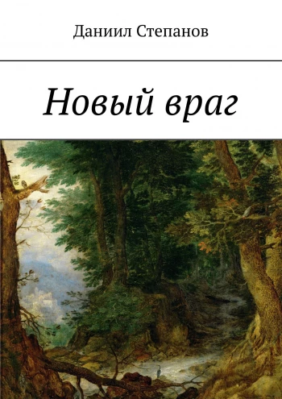
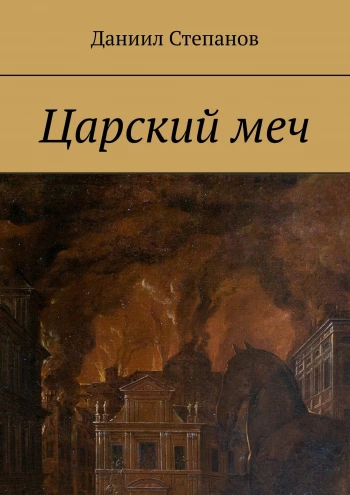
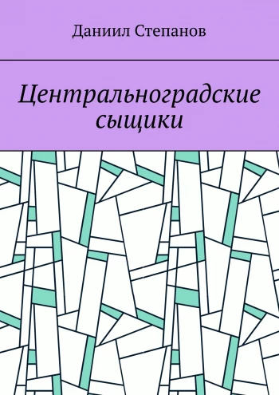
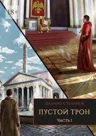

Далеко от нас, на другой планете, есть город Центральноград, где мирно живут люди и говорящие животные. Там работает сыщиком человек Федя Комаров. Однажды кто-то похищает чертежи секретного супероружия — боевого корабля. За расследование этой кражи по поручению царя-пса Рекса берётся Федя и его товарищи.
200 р.
Новый враг

Далеко от нас, на другой планете, есть город Центральноград, где мирно живут люди и говорящие животные. Там работает сыщиком человек Федя Комаров. После раскрытия заговора котов сыщикам придётся столкнуться с новым и опасным врагом, который похищает главного советника царя-пса Рекса.
200 р.
Царский меч

Далеко от нас, на другой планете, есть город Центральноград, где мирно живут люди и говорящие животные. Там работает сыщиком человек Федя Комаров. Их врагу Николаю Хмерову удалось сбежать, но вскоре в городе начинает происходить что-то странное…
200 р.
Центральноградские сыщики

В эту книгу вошли три повести Даниила Степанова — «Заговор котов», «Новый враг» и «Царский меч». Далеко от нас, на другой планете, есть город Центральноград, где мирно живут люди и говорящие животные. Там работает сыщиком человек Федя Комаров. Ему и его команде приходится браться за самые сложные и запутанные дела…
200 р.
Пустой трон. Часть I

Гирская империя переживает не лучшие времена. Время её расцвета уже далеко позади. Император погибает на войне, и ему должен наследовать его старший сын, который не спешит принимать своё наследие. В столице империи простой парень по имени Энгедрий находит записку о спрятанных сокровищах древней цивилизации бремеров. Между тем город потрясают убийства молодых девушек, и всё указывает на жрецов Повелителя Тьмы — таинственную секту служителей зла.